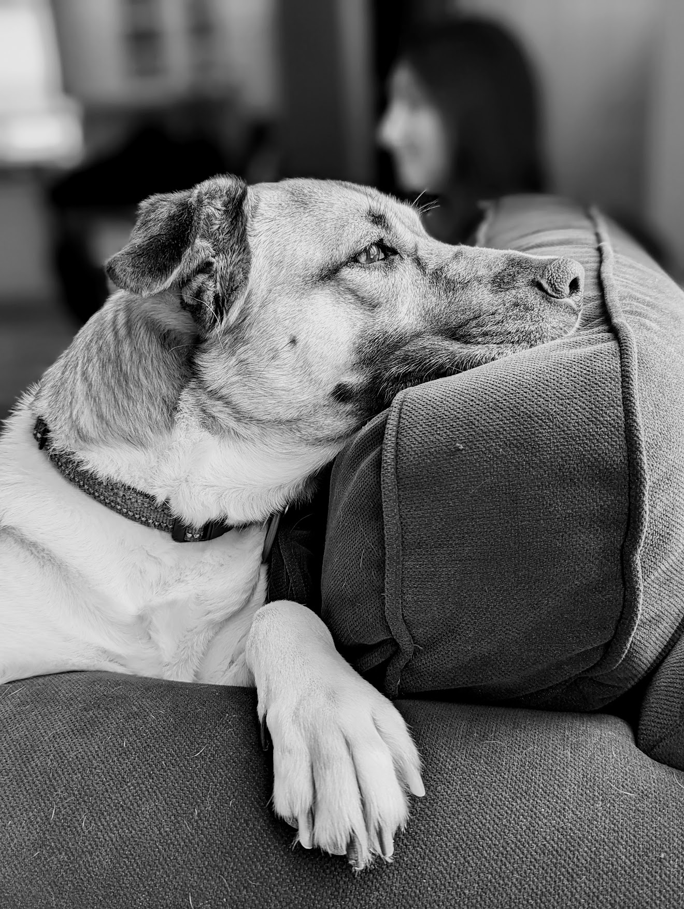

Mango Mae Tout
For five years, my closest companion, after my beautiful wife, was a shepherd mix from the Arkansas Delta named Mango Mae. We adopted her on February 20, 2021, from Detroit Dog Rescue in St. Clair Shores, Michigan. Early on August 30, 2026, a previously unknown tumor in Mango's chest began to bleed. She was humanely euthanized the same day in the loving arms of my wife and me.

Mango was found neglected on the streets of Arkansas with her litter of seven. She was severely malnourished and infected with heartworm. She was shuffled between rescue agencies and foster care until we met her on a cold, COVID day. We fell in love the second we saw her.
I remember that the first time I petted her she sat with one of her paws on my foot, a habit she kept the rest of her life. She looked up at me and that was that. She was, from the first day she came home, a Velcro dog. She would happily play with anyone at home while I was away, but it was certain she would lie by the door waiting for me once play was through.
Mango was affectionate, friendly, and regal. This 50-lb dog was larger than life, excited to make friends - canine, human, or otherwise. She was fond of children, around whom her gentle nature was especially pronounced. She loved our daughter to bits - even though she would storm out of our bedroom in a huff when newborn Cece would cry late at night.
Mango underwent an aggressive heartworm protocol and her personality never changed. She was attacked by a group of off-leash dogs and required over 20 stitches and her personality never changed. She welcomed a newborn into our household and her personality never changed. From the second I met her to her last breath, her tippy-tapping bushy tail and her radiant brown eyes welcomed all friends, new and old.
After some adjustment she loved car rides and kept me company on the daily daycare runs. She was a couch potato who would spring into action at the first hint of cheese or ice cubes, ready to exact her tax. Her favorite food was chicken. She was left-pawed. She tolerated Halloween and Christmas costumes. She chased balls. She chewed elk antlers. She stopped to mark every 100 yards on walks. She slept next to me. She hated getting wet and was scared of storms.
She was my best friend, and I'm going to miss her forever.